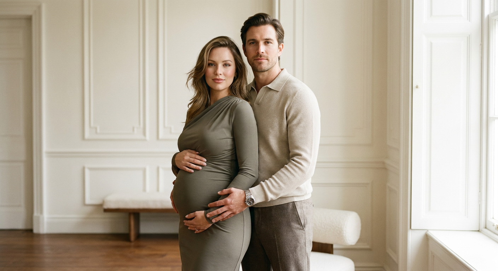
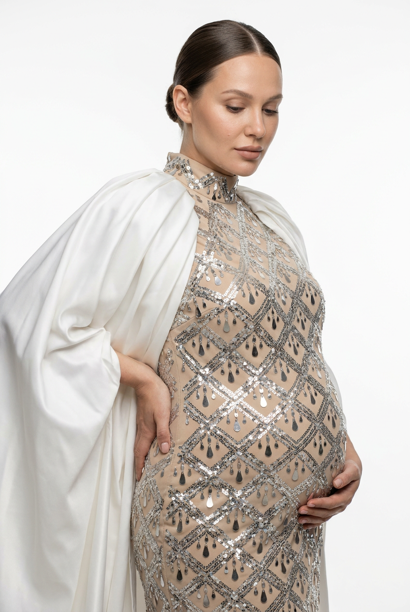
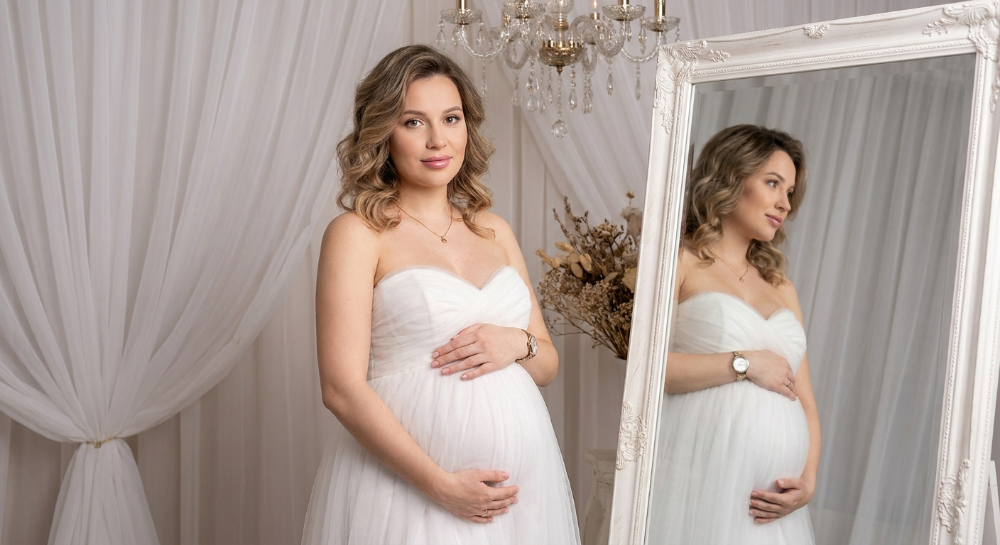
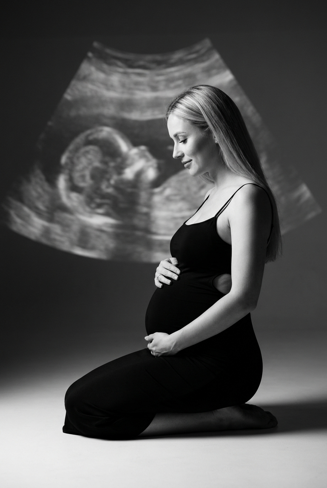
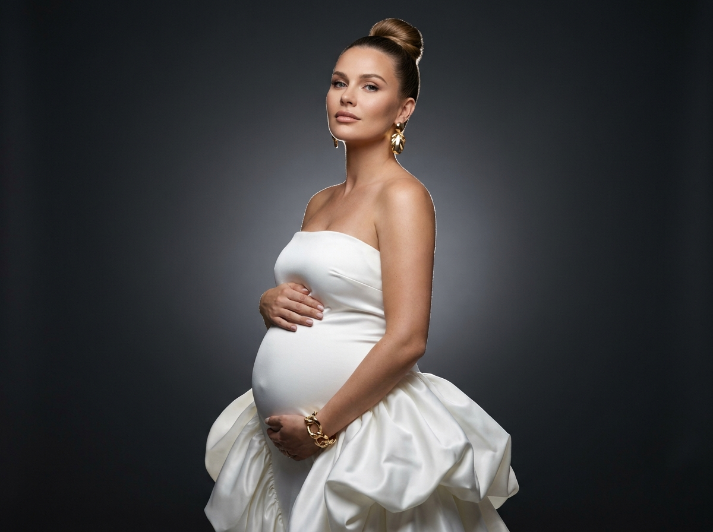
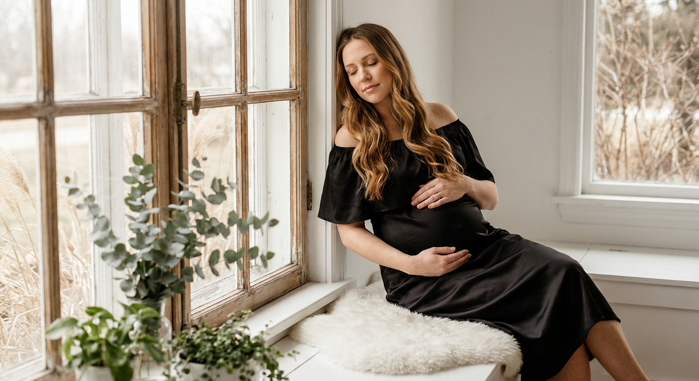
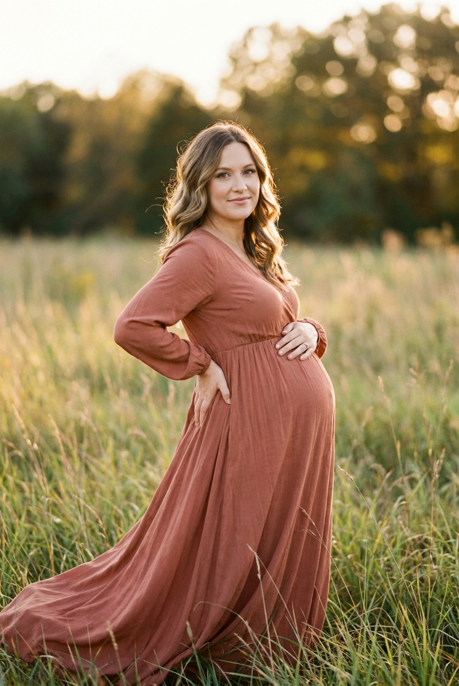
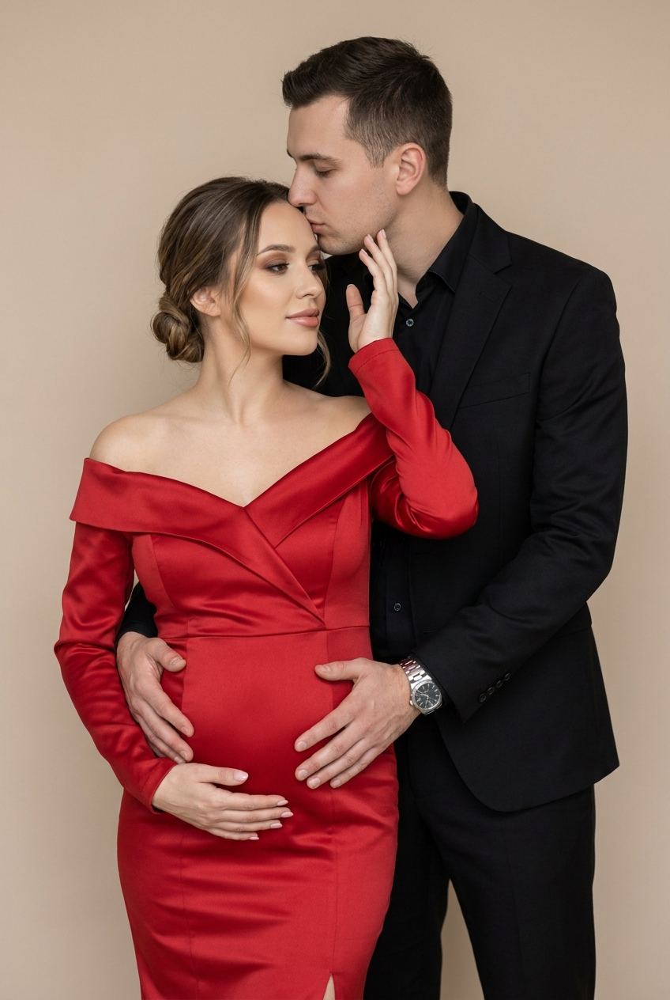
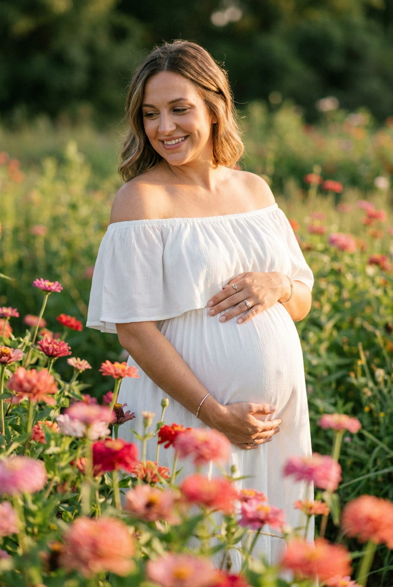
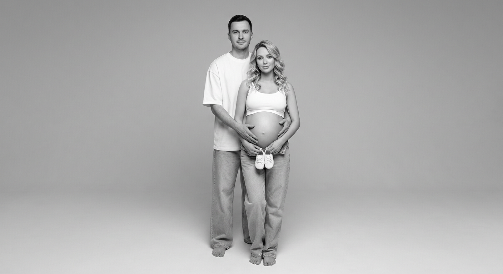

ИИ-фотосессия для беременных: 10 промптов для нейросети

Настоящая фотосессия во время беременности требует времени, подходящей локации и фотографа, а удачная поза получается далеко не с первого дубля. Генерация помогает заранее создать образ, подобрать свет и получить красивые кадры даже дома.
В подборке — 10 сценариев для нейросети: нежные портреты пары, снимки у окна и зеркала, драматичные студийные кадры, прогулка в поле и чёрно-белая семейная фотография.
Как сгенерировать такое фото: пошагово
Нужен снимок анфас при ровном свете, лицо в кадре целиком, без тёмных очков и головных уборов. Разрешение от 1000 пикселей по короткой стороне. Чем чётче исходник, тем точнее модель повторит черты.
Выберите сценарий ниже и нажмите «Копировать» — текст уйдёт в буфер целиком, вместе с командой сохранения внешности. Эта команда стоит первой строкой и отвечает за то, чтобы на выходе было ваше лицо, а не случайное.
Кнопка «Сгенерировать» рядом с каждым промптом открывает модель в новой вкладке. Nano Banana Pro работает с референсом лица — в отличие от моделей, которые генерируют портрет с нуля и узнаваемость теряют.
Промпт — в поле ввода, портрет — через загрузку референса. Порядок значения не имеет, но без референса команда сохранения внешности работать не будет: модели нечего сохранять.
Для сторис и ленты берите 9:16, для превью и обложек — 4:3. Первый результат редко идеален: если поза или свет ушли не туда, поправьте соответствующую часть промпта и запустите заново. Обычно хватает двух-трёх итераций.
10 промптов для генерации
1. Тёплый портрет пары
Строго сохранить внешность по загруженному референсу: черты лица, пропорции, мимику и текстуру кожи без изменений. Редакционный фотореалистичный maternity-портрет пары в интерьерной студии, мягкое семейное настроение, высокая детализация кожи, тканей и декора. Палитра тёплая, нейтрально-бежевая, с умеренной насыщенностью и лёгкой плёночной мягкостью, естественная fine art цветокоррекция. Средний план от бёдер до головы, камера на уровне глаз, центрированная композиция. Пара стоит близко друг к другу, женщина немного развёрнута в три четверти, мужчина нежно обнимает её со спины. Их внимание сосредоточено на лицах и округлом животе, руки лежат поверх живота спокойно и естественно. Лица, пропорции и мимика людей должны выглядеть неизменёнными и узнаваемыми. Малая глубина резкости: лица и фигуры резкие, фон мягко размыт. Объектив 85 мм, f/2, вертикальный кадр 4:5, фотореализм, 8K.
2. Спокойствие в профиль

Строго сохранить внешность по загруженному референсу: черты лица, пропорции, мимику и текстуру кожи без изменений. Фотореалистичный студийный портрет беременной женщины в современной классической эстетике. Кадр три четверти, от макушки до середины бёдер, минималистичный светлый фон, мягкий рассеянный свет, высокая детализация и умеренно малая глубина резкости. Женщина стоит почти в профиль, корпус и лицо развёрнуты к камере примерно на 45 градусов. Левая ладонь бережно поддерживает живот снизу или сбоку, правая рука расположена на пояснице, пальцы формируют изящную линию. Взгляд опущен, выражение задумчивое, спокойное и уверенное. Натуральный макияж без эффекта косметики, видимая текстура кожи, матовые губы, аккуратные брови. Элегантное облегающее платье спокойного оттенка, без лишнего декора. Объектив 85 мм, f/2.8, вертикальный формат 4:5, реалистичные пропорции.
3. Портрет у большого зеркала

Строго сохранить внешность по загруженному референсу: черты лица, пропорции, мимику и текстуру кожи без изменений. Светлый фотореалистичный maternity-портрет беременной женщины в богато декорированной студии. Средний план — от головы до талии или верхней части бёдер, высокая детализация, воздушная атмосфера классической элегантности, мягкая женственность, умеренная глубина резкости. Женщина стоит лицом к объективу или немного повёрнута в три четверти, обе руки нежно лежат на животе: одна сверху, другая слегка поддерживает округлость снизу. Взгляд направлен прямо в камеру, выражение доброжелательное, спокойное, с едва заметной полуулыбкой. Справа в кадре находится большое зеркало в резной белой раме. В отражении видны лицо и верхняя часть фигуры женщины; отражение анатомически точное, без искажения лица, лишних конечностей и несовпадения позы. Мягкий студийный свет, объектив 70 мм, f/2.8, вертикальный кадр 4:5.
4. Драматичный чёрный образ

Строго сохранить внешность по загруженному референсу: черты лица, пропорции, мимику и текстуру кожи без изменений. Драматичный фотореалистичный студийный maternity-портрет, вертикальный формат 2:3, кадр по колено. Женщина сидит на коленях на белом или очень светлом полу, спина слегка выпрямлена, обе руки спокойно лежат на округлом животе: одна сверху, вторая снизу. Голова немного повёрнута в профиль, взгляд нежный и задумчивый, на губах лёгкая улыбка. На ней чёрное облегающее платье без рукавов, с тонкими бретелями и боковыми вырезами; гладкая ткань подчёркивает силуэт живота. Ноги босые или частично открыты. Длинные прямые светлые волосы естественно падают на плечо и спину. Фон тёмный студийный, на нём проецируется крупная выразительная тень листьев или ветвей. Свет направленный, контрастный, но кожа остаётся натуральной, без пластиковой ретуши. Объектив 85 мм, f/2, детальная текстура ткани, 8K.
5. Белое платье на графите

Строго сохранить внешность по загруженному референсу: черты лица, пропорции, мимику и текстуру кожи без изменений. Художественный фотореалистичный портрет беременной женщины в журнальной fashion-эстетике, горизонтальный кадр 4:3, план от макушки до талии или верхней части бёдер. Женщина стоит по центру в полупрофиль, корпус слегка развёрнут, одна рука мягко поддерживает живот снизу, вторая лежит сверху. Взгляд направлен немного в сторону от камеры, выражение лица спокойное и величественное. На ней белое платье с чистым элегантным силуэтом, подчёркивающее беременность, без лишних деталей. Фон гладкий, глубокого тёмно-серого или графитового оттенка, с мягким градиентом: светлее в центре и темнее по краям. Контраст белой одежды и светлой кожи с фоном создаёт драматичный журнальный эффект. Мягкий рисующий свет, аккуратные тени, объектив 85 мм, f/2.8, высокое разрешение, реалистичная кожа.
6. У старинного окна

Строго сохранить внешность по загруженному референсу: черты лица, пропорции, мимику и текстуру кожи без изменений. Атмосферный фотореалистичный maternity-портрет: беременная девушка сидит на широком белом подоконнике большого старинного окна с частыми деревянными переплётами. Спина слегка опирается на оконную раму, голова наклонена вниз и в сторону, глаза закрыты, выражение расслабленное и умиротворённое. Одна рука нежно лежит на животе, другая спокойно расположена на бедре. На девушке чёрное блестящее атласное платье выше колена, облегающее фигуру, с открытыми плечами и тонкой бретелью только на одном плече. Длинные каштановые волосы с медовым оттенком ниспадают на одно плечо. Слева в кадре много зелени: ветви эвкалипта и комнатные растения. Боковой рассеянный дневной свет проходит через окно, мягко подсвечивает кожу и атлас. Объектив 50 мм, f/2, вертикальный кадр 4:5, натуральная текстура лица, cinematic realism.
7. Платье среди травы

Строго сохранить внешность по загруженному референсу: черты лица, пропорции, мимику и текстуру кожи без изменений. Гиперреалистичная беременная фотосессия на природе, вертикальный кадр с почти полным ростом: внизу видны ноги и обувь, женщина стоит чуть выше центра изображения на травянистом участке. Вокруг открытое пространство, мягкий естественный свет, лёгкий ветер. Длинное воздушное платье свободно струится по траве и раскрывается в движении, ткань красиво ловит свет, силуэт живота читается ясно. Женщина смотрит в камеру или немного мимо неё, подбородок слегка поднят, шея вытянута естественно, выражение спокойное, с едва заметной улыбкой. Волосы сохраняют исходный цвет, длину и укладку, мягкие волны или локоны лежат естественно. Кадр выглядит как дорогая outdoor fashion-съёмка, без чрезмерной ретуши. Камера на расстоянии, объектив 85 мм, f/2.8, малая глубина резкости, трава и дальний фон мягко размыты, вертикальный формат 2:3, 8K.
8. Нежность в объятиях

Строго сохранить внешность по загруженному референсу: черты лица, пропорции, мимику и текстуру кожи без изменений. Фотореалистичный портрет беременной пары, кадр три четверти от головы до колен, фронтальный ракурс с лёгким разворотом обоих к камере. Мужчина стоит позади женщины и нежно целует её в лоб. Его руки обнимают живот, ладони лежат на округлости расслабленно и естественно. Женщина немного поворачивает голову назад и вверх к партнёру, одной рукой касается его щеки. Поза должна передавать доверие, близость и спокойствие, без напряжения в пальцах и плечах. Женщина одета в элегантное платье, макияж натуральный, кожа ровная, матовая, с сохранённой живой текстурой; на веках тёплые коричнево-бежевые тени с мягкой растушёвкой. Мужчина в лаконичной нейтральной одежде. Мягкий студийный свет, бежево-серая палитра, объектив 85 мм, f/2.8, фон слегка размыт, вертикальный формат 4:5, 8K.
9. В цветочном поле

Строго сохранить внешность по загруженному референсу: черты лица, пропорции, мимику и текстуру кожи без изменений. Гиперреалистичная беременная фотосессия в цветочном поле, вертикальный cinematic lifestyle-кадр. Женщина находится в центре на средне-дальнем плане, корпус немного развёрнут в сторону. Передний план заполнен полевыми цветами и мягко размытыми соцветиями, часть цветов закрывает низ изображения и создаёт ощущение, будто героиня стоит внутри цветочного массива. Голова слегка опущена, взгляд направлен вниз и влево, на лице тёплая естественная улыбка, выражение спокойное и радостное. Обе руки бережно поддерживают живот. Одежда — лёгкое длинное платье природного оттенка, ткань свободно движется от ветра. Волосы сохраняют исходную длину, оттенок, пробор и естественные волны. Золотистый свет позднего дня, мягкое боке, натуральная цветокоррекция, объектив 85 мм, f/2, вертикальный формат 2:3, высокая детализация.
10. Чёрно-белая семейная сцена

Строго сохранить внешность по загруженному референсу: черты лица, пропорции, мимику и текстуру кожи без изменений. Минималистичная чёрно-белая студийная фотография пары в полный рост: беременная женщина стоит впереди, мужчина находится за её спиной. Оба обращены к камере фронтально. Его руки лежат на округлом животе поверх рук женщины или рядом с ними, пальцы расслаблены. Поза естественная, без напряжения, выражения лиц спокойные, трогательные и сдержанные. Женщина в лаконичном светлом платье, мужчина в простой тёмной одежде без принтов. Монохромная гамма построена на светло-серых и средних серых оттенках, глубокий чёрный используется минимально; свет мягкий, high key или среднеконтрастный. Фон чистый студийный, без предметов и лишних теней. Сохранить точную геометрию лиц, исходную мимику и естественные пропорции пары. Объектив 50 мм, f/4, вертикальный кадр 2:3, резкость на лицах и фигурах, фотореализм.
Что важно учесть в этом стиле
Для maternity-съёмки лучше заранее задать срок беременности, форму живота, длину платья и положение рук. Иначе нейросеть может сделать живот слишком маленьким, добавить лишние пальцы или спрятать его складками ткани.
Если нужен узнаваемый человек, используйте несколько качественных референсов: анфас, три четверти и профиль. В промпте отдельно фиксируйте возраст, волосы, оттенок кожи и мимику. Для естественной фотографии достаточно объектива 50–85 мм и диафрагмы f/2–f/4.
Идеи для вариаций
- Замените студию на спальню с льняными шторами и утренним светом.
- Добавьте белую рубашку партнёра и босые ноги для домашнего lifestyle-кадра.
- Попробуйте съёмку у моря на закате с длинным платьем, которое подхватывает ветер.
- Сделайте серию в одной локации: крупный портрет, кадр по колено и полный рост.
- Попросите нейросеть добавить снимок с детскими пинетками или первым УЗИ в руках.
Как собрать свой промпт
Сначала укажите тип кадра: портрет, план по колено или полный рост. Затем опишите локацию, позу, направление взгляда, одежду и положение рук. После этого добавьте свет: окно, мягкий софтбокс, контровое солнце или контрастный проектор.
В финале задайте технические параметры: фокусное расстояние, диафрагму, формат и глубину резкости. Для одного образа полезно сделать 4–6 генераций, а затем отдельно перегенерировать руки, лицо или детали платья, не меняя удачную композицию.
Ошибки, из-за которых кадр не получается
- Слишком много указаний в одном абзаце. Разделяйте сцену, позу, свет и внешность, чтобы модель не потеряла ключевые детали.
- Не задан формат кадра. Без вертикального 2:3 или горизонтального 4:3 композиция может обрезать ноги, платье или отражение.
- Руки описаны расплывчато. Уточняйте, какая ладонь лежит сверху, где находятся пальцы и кто касается живота.
- Зеркало добавлено без контроля отражения. Просите точное отражение без искажений, дополнительных конечностей и другой мимики.
- Чрезмерная ретушь. Добавляйте живую текстуру кожи, естественные поры и запрет на пластиковое лицо.
Частые вопросы
Как сделать такое ИИ-фото бесплатно?
Попробуйте Kandinsky или Шедеврум: они подходят для генерации по тексту, но точность лица и работу с референсом могут обеспечивать нестабильно. В Krea AI и Arena.ai можно тестировать разные модели и сравнивать результаты, однако доступность загрузки фото, число попыток и функции редактирования меняются. Для узнаваемого лица обычно требуется несколько генераций и ручной отбор.
Как сохранить сходство с беременной на фото?
Загрузите чёткий референс без сильных фильтров и закрывающих лицо волос. Лучше использовать несколько ракурсов, а в запросе отдельно закрепить форму глаз, носа, губ, овал лица, возраст и причёску. Если модель меняет внешность, упростите фон и одежду, а лицо редактируйте отдельным проходом.
Какой формат выбрать для фотосессии?
Для портрета и кадра по колено подойдёт вертикальный формат 4:5 или 2:3. Для полного роста на природе используйте 2:3, чтобы сохранить платье и ноги. Горизонтальный 4:3 удобен для портрета по пояс, пары и сцен с зеркалом.
Почему нейросеть искажает живот и руки?
Модель одновременно рисует сложную позу, ткань и анатомию, поэтому ладони могут сливаться с животом. Упростите положение рук, опишите их по отдельности и добавьте фразу о естественных пальцах и анатомически правильных пропорциях. После выбора удачного кадра исправьте руки локальной дорисовкой.